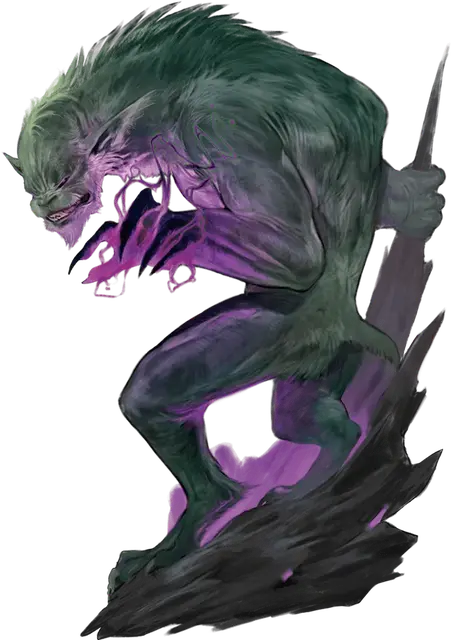

Кваггот тонот
Quaggoth Thonot
Средний Гуманоид (Кваггот), хаотично-нейтральный

Класс Доспеха 13 (природный доспех)
Хиты 45 (6к8 + 18)
Скорость 30 футов, лазая 30 футов
| мод | спас | ||
|---|---|---|---|
| СИЛ | 17 | +3 | +3 |
| ЛОВ | 12 | +1 | +1 |
| ТЕЛ | 16 | +3 | +3 |
| мод | спас | ||
|---|---|---|---|
| ИНТ | 6 | −2 | −2 |
| МДР | 12 | +1 | +1 |
| ХАР | 7 | −2 | −2 |
Навыки Атлетика +5
Иммунитет к урону яд
Иммунитет к состояниям отравление
Чувства тёмное зрение 120 футов, пассивное Восприятие 11
Языки Подземный
Опасность 3 (700 опыта)
Бонус мастерства +2
Среда обитания Подземье
Особенности
Ярость от ранения. Если у кваггота 10 или меньше хитов, он совершает броски атаки с преимуществом. Кроме того, он причиняет дополнительный урон 7 (2к6) всем целям, по которым попадает рукопашными атаками.
Врождённое колдовство (псионика). Базовой характеристикой кваггота является Мудрость (Сл спасброска от заклинаний 11). Кваггот может накладывать следующие заклинания, не нуждаясь ни в каких компонентах:
• Неограниченно: волшебная рука [mage hand], падение пёрышком [feather fall];
• 1/день каждое: лечение ран [cure wounds], увеличение/уменьшение [enlarge/reduce], раскалённый металл [heat metal], отражения [mirror image].
Действия
Мультиатака. Кваггот совершает две атаки когтём.
Коготь. Рукопашная атака оружием: +5 к попаданию, досягаемость 5 футов, одна цель. Попадание: Рубящий урон 6 (1к6 + 3).
Описание
Дикие и территориальные квагготы карабкаются по расщелинам Подземья. Они яростно сметают своих противников, становясь ещё более смертоносными перед лицом смерти.
Происхождение квагготов. Квагготы никогда не были просвещенным видом, но и не всегда были жестокими обитателями Подземья, коими они являются сегодня. В отдаленном прошлом племена квагготов обитали на поверхности, как ночные лесные охотники, обладающие своим языком и культурой. Когда в мире смертных появились эльфы, они схлестнулись с квагготами, что со временем почти привело к вымиранию последних. Лишь побег в глубины Подземья позволил квагготам выжить.
С течением столетий под поверхностью мира, шкуры квагготов обесцветились, а их зрение приспособилось к темноте. Постоянная опасность и странная магия их новой среды обитания изменила их. Становясь все более дикими и жестокими, они поедали всю еду, которую могли найти, а когда не могли найти её — охотились друг на друга. Они забыли свое прошлое тогда, когда каннибализм стал частью их новой культуры.
Слуги дроу. Древняя вражда с эльфами поверхности облегчила привлечение квагготов темными эльфами на свою сторону. За недавние годы дроу заинтересовались разведением квагготов, поощряя их свирепость, и укрепляя их послушание. Богатые дома дроу содержат легионы квагготов под своим командованием. Более того, дроу культивируют ненависть квагготов к эльфам, отправляясь с ними в набеги на известные им анклавы эльфов на поверхности.
Тоноты. Некоторые квагготы впитывают псионическую энергию, которой пронизаны части Подземья. Когда племя обнаруживает, что один из них унаследовал способности такого рода, они выдвигают его на роль племенного шамана, или тонота. Тонот хранит знания племени и гарантирует его превосходство над врагами. Тонота, который подвел свое племя, убивают и съедают во время каннибальского ритуала, в надежде, что его силы перейдут к другому, более достойному квагготу.
Иммунитет к ядам. Поколения охоты на ядовитых подземных существ и постоянное воздействие плесени и грибов, растущих в глубинах, заставили квагготов выработать иммунитет к ядам всех видов.